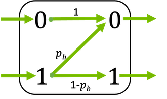

This module provides layers and functions that implement channel
models with discrete input/output alphabets.
All channel models support binary inputs \(x \in \{0, 1\}\) and bipolar
inputs \(x \in \{-1, 1\}\), respectively. In the later case, it is assumed
that each 0 is mapped to -1.
The channels can either return discrete values or log-likelihood ratios (LLRs).
These LLRs describe the channel transition probabilities
\(L(y|X=1)=L(X=1|y)+L_a(X=1)\) where \(L_a(X=1)=\operatorname{log} \frac{P(X=1)}{P(X=0)}\) depends only on the a priori probability of \(X=1\). These LLRs equal the a posteriori probability if \(P(X=1)=P(X=0)=0.5\).
Further, the channel reliability parameter \(p_b\) can be either a scalar
value or a tensor of any shape that can be broadcasted to the input. This
allows for the efficient implementation of
channels with non-uniform error probabilities.
The channel models are based on the Gumble-softmax trick [GumbleSoftmax] to
ensure differentiability of the channel w.r.t. to the channel reliability
parameter. Please see [LearningShaping] for further details.
The error probability \(p_\text{b}\) can be either scalar or a
tensor (broadcastable to the shape of the input). This allows
different erasure probabilities per bit position. In any case, its last
dimension must be of length 2 and is interpreted as \(p_\text{b,0}\) and
\(p_\text{b,1}\).
This class inherits from the Keras Layer class and can be used as layer in
a Keras model.
Parameters:
return_llrs (bool) – Defaults to False. If True, the layer returns log-likelihood ratios
instead of binary values based on pb.
bipolar_input (bool, False) – Defaults to False. If True, the expected input is given as
\(\{-1,1\}\) instead of \(\{0,1\}\).
llr_max (tf.float) – Defaults to 100. Defines the clipping value of the LLRs.
dtype (tf.DType) – Defines the datatype for internal calculations and the output
dtype. Defaults to tf.float32.
Input:
(x, pb) – Tuple:
x ([…,n], tf.float32) – Input sequence to the channel consisting of binary values \(\{0,1\}
` or :math:\){-1,1}`, respectively.
pb ([…,2], tf.float32) – Error probability. Can be a tuple of two scalars or of any
shape that can be broadcasted to the shape of x. It has an
additional last dimension which is interpreted as \(p_\text{b,0}\)
and \(p_\text{b,1}\).
Output:
[…,n], tf.float32 – Output sequence of same length as the input x. If
return_llrs is False, the output is ternary where a -1 and
0 indicate an erasure for the binary and bipolar input,
respectively.
where \(y\) denotes the binary output of the channel.
The bit flipping probability \(p_\text{b}\) can be either a scalar or a
tensor (broadcastable to the shape of the input). This allows
different bit flipping probabilities per bit position.
This class inherits from the Keras Layer class and can be used as layer in
a Keras model.
Parameters:
return_llrs (bool) – Defaults to False. If True, the layer returns log-likelihood ratios
instead of binary values based on pb.
bipolar_input (bool, False) – Defaults to False. If True, the expected input is given as {-1,1}
instead of {0,1}.
llr_max (tf.float) – Defaults to 100. Defines the clipping value of the LLRs.
dtype (tf.DType) – Defines the datatype for internal calculations and the output
dtype. Defaults to tf.float32.
Input:
(x, pb) – Tuple:
x ([…,n], tf.float32) – Input sequence to the channel.
pb (tf.float32) – Bit flipping probability. Can be a scalar or of any shape that
can be broadcasted to the shape of x.
Output:
[…,n], tf.float32 – Output sequence of same length as the input x. If
return_llrs is False, the output is binary and otherwise
soft-values are returned.
The erasure probability \(p_\text{b}\) can be either a scalar or a
tensor (broadcastable to the shape of the input). This allows
different erasure probabilities per bit position.
Please note that the output of the BEC is ternary. Hereby, -1 indicates an
erasure for the binary configuration and 0 for the bipolar mode,
respectively.
This class inherits from the Keras Layer class and can be used as layer in
a Keras model.
Parameters:
return_llrs (bool) – Defaults to False. If True, the layer returns log-likelihood ratios
instead of binary values based on pb.
bipolar_input (bool, False) – Defaults to False. If True, the expected input is given as {-1,1}
instead of {0,1}.
llr_max (tf.float) – Defaults to 100. Defines the clipping value of the LLRs.
dtype (tf.DType) – Defines the datatype for internal calculations and the output
dtype. Defaults to tf.float32.
Input:
(x, pb) – Tuple:
x ([…,n], tf.float32) – Input sequence to the channel.
pb (tf.float32) – Erasure probability. Can be a scalar or of any shape that can be
broadcasted to the shape of x.
Output:
[…,n], tf.float32 – Output sequence of same length as the input x. If
return_llrs is False, the output is ternary where each -1
and each 0 indicate an erasure for the binary and bipolar input,
respectively.
In the Z-channel, transmission errors only occur for the transmission of
second input element (i.e., if a 1 is transmitted) with error probability
probability \(p_\text{b}\) but the first element is always correctly
received.

This layer supports binary inputs (\(x \in \{0, 1\}\)) and bipolar
inputs (\(x \in \{-1, 1\}\)).
If activated, the channel directly returns log-likelihood ratios (LLRs)
defined as
The error probability \(p_\text{b}\) can be either a scalar or a
tensor (broadcastable to the shape of the input). This allows
different error probabilities per bit position.
This class inherits from the Keras Layer class and can be used as layer in
a Keras model.
Parameters:
return_llrs (bool) – Defaults to False. If True, the layer returns log-likelihood ratios
instead of binary values based on pb.
bipolar_input (bool, False) – Defaults to False. If True, the expected input is given as {-1,1}
instead of {0,1}.
llr_max (tf.float) – Defaults to 100. Defines the clipping value of the LLRs.
dtype (tf.DType) – Defines the datatype for internal calculations and the output
dtype. Defaults to tf.float32.
Input:
(x, pb) – Tuple:
x ([…,n], tf.float32) – Input sequence to the channel.
pb (tf.float32) – Error probability. Can be a scalar or of any shape that can be
broadcasted to the shape of x.
Output:
[…,n], tf.float32 – Output sequence of same length as the input x. If
return_llrs is False, the output is binary and otherwise
soft-values are returned.
M. Stark, F. Ait Aoudia, and J. Hoydis. “Joint learning of geometric and probabilistic constellation shaping,” 2019 IEEE Globecom Workshops (GC Wkshps). IEEE, 2019.